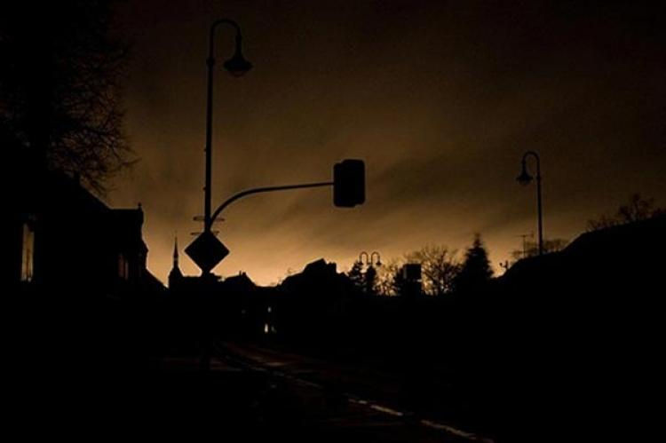

- Back
- Funny
- Home
Brownout
So umpisahan ko na, 8:46 pm kakauwi ko lang galing school. Nadatnan ko pa sa baba si kuya tsaka yung yaya namin. Nagpahinga ng konti, kumain ng hapunan, nagtapon ng basura, nagshower. Yan yung mga ginawa ko after nyan umakyat muna ako sa kwarto ko, at nakaiglip ako. Nagising nalang ako mga bandang 10:56 PM. Ang init kasi, tapos yun namalayan ko nalang na brownout. Kasama ko sa kwarto yung lola ko tsaka yung taga-alaga namin ng lola ko. So dahil ang init tapos boring nagsoundtrip nalang ako, nakamax volume pa partida. Ilang saglit lang narinig kong sumigaw yung kuya ko, tinatawag ako. Pinapababa ako may iuutos ata. Narinig din ng yaya namin kaya pinabangon na ako. Nung bababa na ako sa hagdan nakita ko si kuya sa may dulo ng 2nd floor namin tinanong ako kung saan daw ako pupunta. Edi sinagot ko sya ng " Hala? Eh diba tinatawag mo ko? " sabi nya " Ha? Hindi ako yun. " tapos nagtaka ako, pero pinagsawalang bahala ko nalang tutal madalas naman ako nun lokohin. Kaso nung babalik na ako sa kwarto biglang nakasalubong ko si kuya paakyat ng hagdan galit na galit. Sabi nya pa " T&@!#$+ ka! Kanina pa ako tawag ng tawag sayo! Puro ka cellphone! Nakasuksok na naman yung earphone dyan sa tenga mo! " edi syempre ako natameme. Narinig ng yaya namin yung pagsigaw ni kuya sa akin. Singit nya " Oh bakit mo sinisigawan yan? Kanina ko pa pinababa si ** ah? " tapos tumingin sila sa akin pareho tsaka na ako nagsalita. " Kuya, wag kang magalit sa akin, lumabas naman ako agad e. Nakausap pa kita dun sa may tapat ng salamin tinatanong kita kung bakit mo ko tinawag sabi mo di ikaw yun kaya pabalik na ako ng kwarto ". Nung una ayaw pa nilang maniwala , kesyo gawa gawa na naman daw ako ng kwento. Kaso yung sumunod na nangyari yung ikinabigla namin. Biglang may sumigaw na lalaki mula sa kwarto ni mama na kaboses ng kuya ko at ang sabi " Hindi nga ako yung tumatawag sayo bakit ang kulit mo! " na pasigaw. Dali dali naming kinuha yung lola ko sa kwarto at bumaba. Hindi pa rin bumabalik yung kuryente, naisipan ko agad i-share to dito kasi alam kong kahit kayo yung lumugar sa akin ngayon alam kong kikilabutan ko kayo. Note: Yearly kami nagpapabless ng bahay, Christian din family ko, hindi ko man gustuhing maniwala sa multo o ano pa man , ang bukas kong mata na ang gumagawa ng paraan. Yun lang maraming salamat! Ps. Naiiyak ako habang tinatype ko to, naaalala ko kasi yung mukha nung lalaking nakausap ko na kamukha ni kuya. Thirdeye.